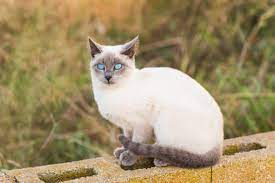

Avec le Persan, le Siamois fait partie des races de chat les plus anciennes. Les Siamois sont des chats originaires du Sud-Est de l’Asie, plus précisément de Thaïlande. Différentes théories circulent concernant leur origine. La race pourrait descendre des chats sacrés des temples de Siam. Ces derniers bénéficiaient d’une attention toute particulière au sein du palais et étaient exclusivement réservés aux membres de la famille royale.
Revenir Accueil